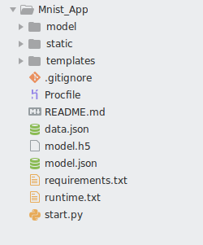
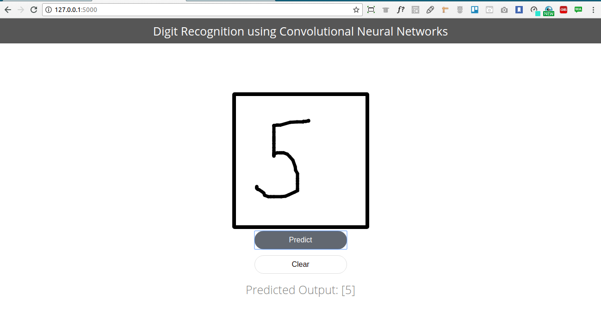

Building MNIST App using Flask

About the Project
In this part of Digit Recognition we will be building a Digit recognizer App where we will be building a flask web app so that we could draw any no and it will detect the number drawn on the screen
Uisng a Trained Model
As we have seen in part 1 ,we trained a Convolutional Neural Network on MNIST dataset and acheived a very decent accuracy on the train and test set.
We later save the model using keras model's to_json . we could also use python pickle module to save the model in binary format and later restore the model whenever we need it.
model_json = model.to_json()
#open a json file and write models configurations in json format
with open("model.json", "w") as json_file:
json_file.write(model_json)
# serialize weights to HDF5
model.save_weights("model.h5")
print("Saved model to disk")Saved model to disk
Data Preprocessing
Now as we have trained our model we could just pickup any handwritten digit image and our model will predict the correct label with flying colors !! The sad part is no.
We will have to do some transformations while feeding input to the image.First we will be installing flask on our system using pip python package manager.All the installation steps required for installation are mentioned in the FlaskOfficial Website
.Once Flask have been installed,we ill be setting our templates and app.pyThe Directory structure of our app is as follows
where the static folder contains all the js,css files where as model is used to store the saved model. Inside the model folder we have a file called load_model.py
This file compile the model and instead of learning the new weights and training the model we could use previously learned weights.
###############
model_load.py
##############
import numpy as np
import keras.models
from scipy.misc import imread, imresize,imshow
import tensorflow as tf
from keras.models import Sequential
from keras.models import Sequential
from keras.layers import Dense, Dropout, Flatten
from keras.layers import Conv2D, MaxPooling2D,MaxPool2D
def init():
model = Sequential()
model.add(Conv2D(64,(3,3),padding = 'Same',activation ='relu', input_shape = (28,28,1)))
model.add(MaxPool2D())
model.add(Conv2D(32,(3,3),padding = 'Same',activation ='relu', input_shape = (28,28,1)))
model.add(MaxPool2D())
model.add(Conv2D(16,(3,3),padding = 'Same',activation ='relu', input_shape = (28,28,1)))
model.add(MaxPool2D())
model.add(Dropout(0.5))
model.add(Flatten())
model.add(Dense(128))
model.add(Dropout(0.5))
model.add(Dense(10,activation = "softmax"))
#load woeights into new model
model.load_weights("model.h5")
print("Loaded Model from disk")
#compile and evaluate loaded model
model.compile(loss=keras.losses.categorical_crossentropy, optimizer=keras.optimizers.Adadelta(), metrics=['accuracy'])
#loss,accuracy = model.evaluate(X_test,y_test)
#print('loss:', loss)
#print('accuracy:', accuracy)
graph = tf.get_default_graph()
return model, graphNow as you can see model is compiled but not fitted .Only the weights learned are reused to compile the model.
Setting up the Server
Now we will be setting the starter file or entry file of the app start.py.This file contains roting and request handlinglogic.we will be focusing on the preprocessing part.
from flask import Flask, render_template, request
from scipy.misc import imsave, imread, imresize
import numpy as np
import keras.models
import re
import base64
import sys
import os
from load_model import *
app = Flask(__name__)
global model, graph
model, graph = init()
#setting index route
@app.route('/')
def index():
return render_template("index.html")
#request handling logic for each and every request
@app.route('/predict/', methods=['GET','POST'])
def predict():
# get data from drawing canvas and save as image
parseImage(request.get_data())
# read parsed image back in 8-bit, black and white mode (L)
x = imread('output.png', mode='L')
x = np.invert(x)
x = imresize(x,(28,28))
# reshape image data for use in neural network
x = x.reshape(1,28,28,1)
with graph.as_default():
out = model.predict(x)
print(out)
print(np.argmax(out, axis=1))
response = np.array_str(np.argmax(out, axis=1))
return response
#Parsing images for preprocessing,decoding of base64 and converiting into
def parseImage(imgData):
# parse canvas bytes and save as output.png
imgstr = re.search(b'base64,(.*)', imgData).group(1)
with open('input.png','wb') as output:
output.write(base64.b64decode(imgstr))
if __name__ == '__main__':
app.debug = True
#setting the port to serve
port = int(os.environ.get("PORT", 5000))
#start the main App
app.run(host='0.0.0.0', port=port)Now the Template of the app has canvas element which takes the input from user .The image drawn on the Canvas is served as a Base64 encoded string is posted to server.
The index root acts has a separate function for post at the index route.The Parse image function takes the base64 encoded string,converts it into image ,reshapes into the form Keras would expect the input to be [no_of_sample,height,weight,channel].
Now the image output.png written by the parse image function is read by the program.
Now the App reads the image and keras model.predict function takes the reshaped image of the form [-1,28,28,1].
Running the App
The App is ready to be served in Localhost.go to to the terminal and type the following
export FLASK_APP = //starter script.py python -m flask run
The App takes a little time to run,because model is loaded and weights are added.
A live version of my app is deployed to heroku. Try it out